You can open a widget from the Widgets menu, search, or Market Explorer. When opening a widget from the widgets menu, you can select an instrument to display in the widget using search or the Market Explorer. Once the widget is opened, you can also open linked widgets or custom widgets.
You can use search or Market Explorer to select an instrument when opening the following widgets:
- MD Trader
- Market Grid
- Chart
- Blocktrader (NFX contracts only)
- Autospreader (Create Spread screen)
- Spread Matrix
Opening a widget from the Widgets menu
To open a widget from the Widgets menu:
-
Click Widgets in the workspace title bar to display the available widgets.
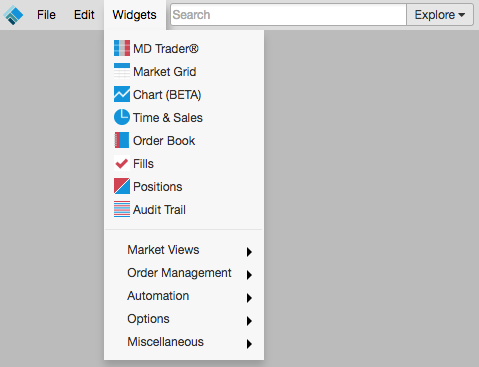
-
Select a widget (e.g., click MD Trader®).
The MD Trader widget opens.

-
Enter an exchange, product type, product, symbol, or instrument name in the Set Instrument: box.
Tip: You can also enter keywords to search for an instrument (e.g., natural gas, soybeans, oil, etc.).
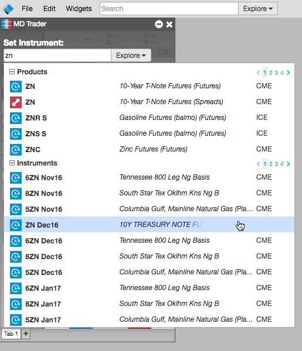
After selecting an instrument, the widget displays the instrument data.
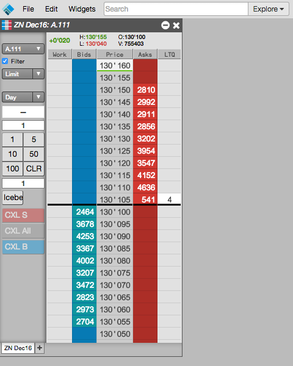
Note: Opening a widget for a product will open all available contracts
for that product.
-
Optionally, click Explore to open Market Explorer to find and select an instrument.
Select an exchange, product type, product, and instrument.
Tip: Use Shift-click to select multiple instruments for a product, or just select the product to open all instruments for that product.
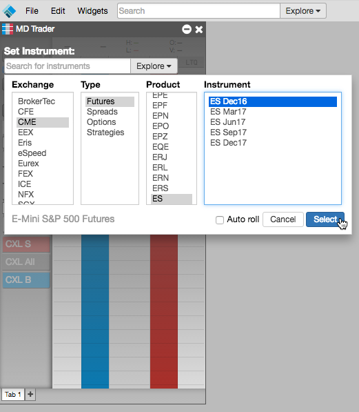
After selecting an instrument, the widget opens with the market data for that instrument.
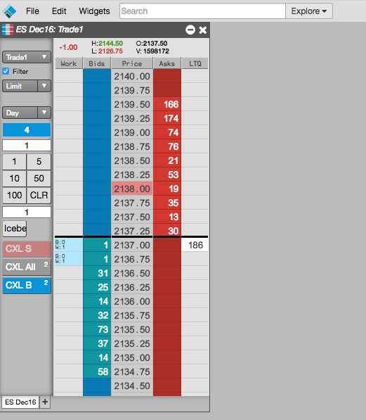
Launching a linked widget
From an open widget, you can open widgets linked to the selected instrument. The content of the linked widget updates automatically when you select another instrument in the grid.
To launch a linked widget:
-
Right-click on an instrument row and highlight Launch linked widget.
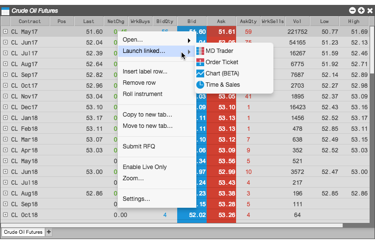
-
Select the desired widget and move it to the desired location.
The new widget opens with a yellow border.
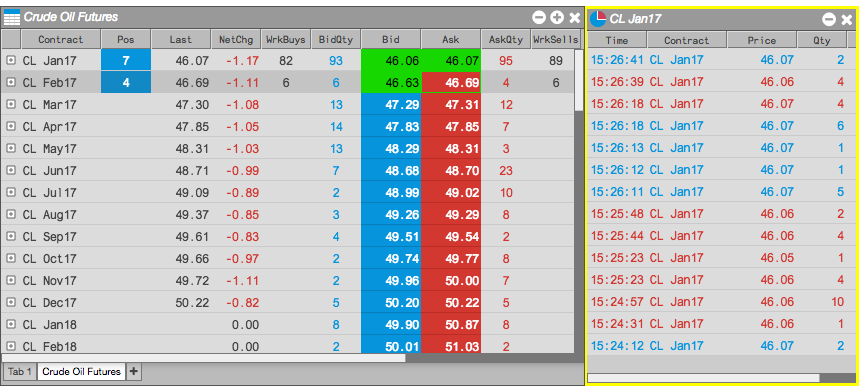
-
Select a different instrument (e.g., CL Feb17).
Notice the widget now contains the market data for the selected instrument.
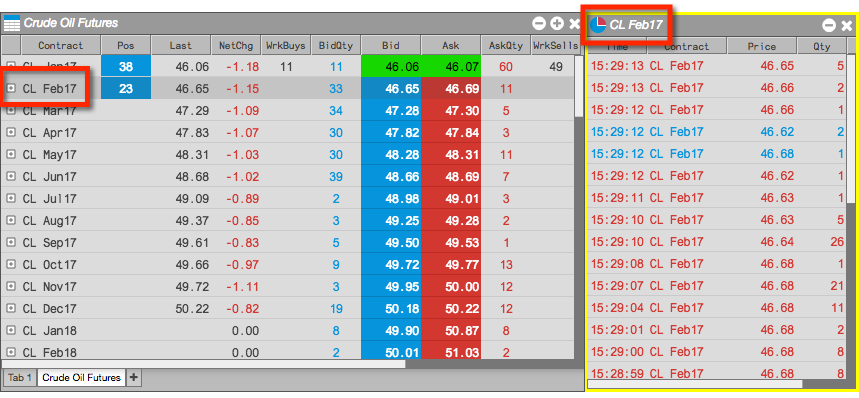
Custom widgets you create appear in the Widgets menu, so you can easily launch them. If you chose to show the custom widget it search results, you can also launch them from the search results for the selected product or instrument.
To launch a custom widget, do either of the following:
-
From the Widgets menu, select Custom widgets and select the desired custom widget, as shown:
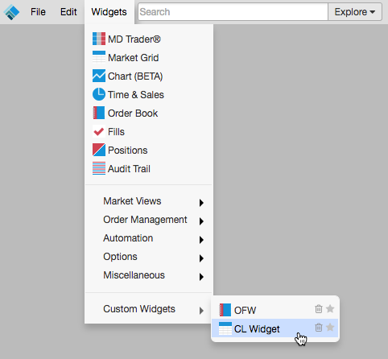
-
Select it when searching for an instrument, as shown.
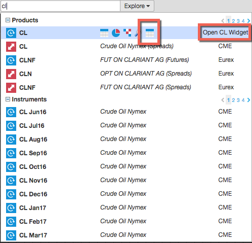
The custom widget opens.
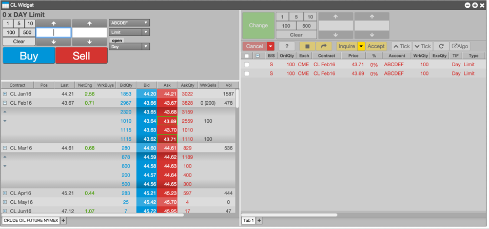
Cloning widgets allow you to quickly make exact copies of existing widgets. A cloned widget duplicates the selected widget's characteristics such as its physical attributes (size, colors, columns, etc.), its widget settings, selected instruments, multiple tabs and so on. You can clone any type of widget, except for those that do not support multiple instances, such as Autospreader and Algo Dashboard.
To create a clone of an existing widget:
-
Right-click in the widget's title bar to display its context menu.
-
From the context menu, select Clone widget.
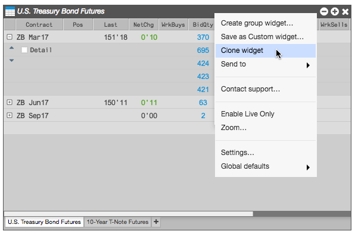
The cloned widget appears.
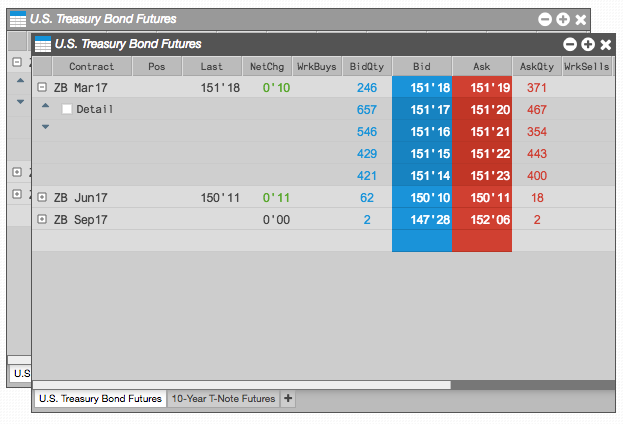